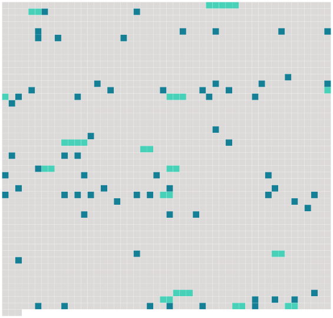

Longueur nb maillons : 80 mentions |
 |
» [4 phrases] Soudain, [Rachel] suffoqua, toussant aux larmes, et rendant de la fumée par les narines. Le marquis, sous prétexte de [l'] embrasser, venait de [lui] souffler un jet de tabac dans la bouche.
[Elle] ne se fâcha point, ne [dit] pas un mot, mais [elle] regarda fixement [son] possesseur avec une colère éveillée tout au fond de [son] oeil noir. [9 phrases] Mlle Fifi avait pris [Rachel] sur ses genoux, et, s'animant à froid, tantôt il embrassait follement les frisons d'ébène de [son] cou, humant par le mince intervalle entre la robe et la peau la douce chaleur de [son] corps et tout le fumet de [sa] personne ; tantôt à travers l'étoffe, il [la] pinçait avec fureur, [la] faisant crier, saisi d'une férocité rageuse, travaillé par [son] besoin de ravage.
Souvent aussi, [la] tenant à pleins bras, [l'] étreignant comme pour [la] mêler à lui, il appuyait longuement ses lèvres sur la bouche fraîche de [la juive] , [la] baisait à perdre haleine ; mais soudain il [la] mordit si profondément qu'une traînée de sang descendit sur le menton de [la jeune femme] et coula dans [son] corsage. Encore une fois, [elle] le regarda bien en face, et, lavant la plaie, [murmura] : « Ça se paye, cela. [9 phrases]
»
» [4 phrases]
»
» oui, parlons -en, [la belle] !! [3 phrases]
» [4 phrases]
[Rachel] [elle -même] se taisait, impuissante à répondre. Alors, le petit marquis posa sur la tête de [la juive] sa coupe de Champagne emplie à nouveau : « A nous aussi, cria-t -il, toutes les femmes de France!!
» Les lèvres tremblantes, [elle] bravait du regard l'officier qui riait toujours, et elle balbutia, d'une voix étranglée de colère : « Ça, ça, ça n'est pas vrai, par exemple, vous n'aurez pas les femmes de France.
»
» [moi] !! [Je] ne suis pas une femme, [moi] , [je] suis [une putain] ; c'est bien tout ce qu'il faut à des Prussiens.
» [1 phrases]
Tous poussèrent un rugissement, et se levèrent en tumulte ; mais ayant jeté [sa] chaise dans les jambes du lieutenant Otto, qui s'écroula tout au long, [elle] courut à la fenêtre, l'ouvrit avant qu'on eût pu [l'] atteindre et s' [élança] dans la nuit, sous la pluie qui tombait toujours. [11 phrases]
On n'avait pas retrouvé [Rachel] [1 phrases]
[La juive] ne semblait pas avoir laissé une seule trace de [son] passage. [9 phrases]
C'est qu' [une pauvre fille] vivait là-haut, dans l'angoisse et la solitude, nourrie en cachette par ces deux hommes. [Elle] y resta jusqu'au départ des troupes allemandes. Puis, un soir, le curé ayant emprunté le char-à-bancs du boulanger, conduisit lui -même [sa prisonnière] jusqu'à la porte de Rouen.
Arrivé là, le prêtre [l'] embrassa ; [elle] descendit et [regagna] vivement à pied le logis public, dont la patronne [la] croyait morte.
[Elle] en fut tirée quelque temps après par un patriote sans préjugés qui [l'] aima pour [sa] belle action, puis [l'] ayant ensuite chérie pour [elle -même] , [l'] épousa, en fit [une Dame] qui valut autant que beaucoup d'autres. |
 |
La ressource peut être téléchargée sur la page Ortolang
Si vous avez des questions ou vous voyez des erreurs, merci d'envoyer un mail à silvia.federzoni89@gmail.com
Site développé par S. Federzoni (contact)